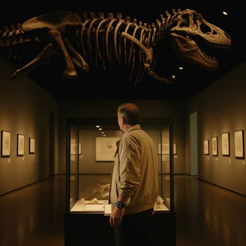
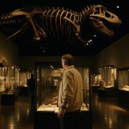
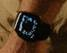

Entity Layout — Under the huge skeleton of the Tyrannosaurus rex, a detective wearing
Under the huge skeleton of the Tyrannosaurus rex, a detective wearing a retro windbreaker stood in front of the display cabinet. There were no other tourists in the exhibition hall, but he was wearing an electronic watch that did not belong to that era on his wrist, full of suspense movie qualities.


Judge — Direct
- PASSEntity Layout - Three-Dimensional Space — The image depicts a man standing in front of a glass display cabinet. A large dinosaur skeleton is positioned above and behind him, fulfilling the requirement that he is 'under' the skeleton and 'in front' of the display cabinet.
- PASSStyle — The image features moody, dramatic lighting with strong shadows and highlights, a muted color palette, and a composition where a large, imposing skeleton looms over a solitary figure. These elements contribute to a tense, cinematic atmosphere consistent with 'suspense movie qualities'.
- FAILGrammar - Negation — The prompt states there are 'no other tourists'. In the image, another person is visible in the background on the far left, standing in the exhibition hall.
- PASSCompound - Feature Matching — The man in the center is wearing a beige jacket that resembles a retro windbreaker. On his left wrist, a large, modern-style electronic watch with a glowing screen is clearly visible.
- PASSWorld Knowledge — The large, bipedal dinosaur skeleton in the background has a massive skull, large teeth, and small forelimbs, which are the characteristic features of a Tyrannosaurus rex skeleton.
Judge — Continuum
- PASSEntity Layout - Three-Dimensional Space — In the image, a man is positioned in the center, standing in front of a glass display cabinet. Suspended from the ceiling directly above him is the large skeleton of a dinosaur, fulfilling the spatial arrangement described in the prompt.
- PASSStyle — The image exhibits a suspenseful quality through its use of dramatic, low-key lighting which illuminates the subject and the exhibits while casting the rest of the hall in shadow. The composition, featuring a lone figure from behind in a vast, empty space, contributes to a mysterious and cinematic atmosphere.
- PASSGrammar - Negation — The exhibition hall is empty except for the single man. The visible corridors and spaces around him contain no other people, thus adhering to the 'no other tourists' requirement.
- PASSCompound - Feature Matching — The man, seen from the back, wears a light-colored, collared jacket consistent with a retro windbreaker. On his left wrist, a modern-style electronic watch with a glowing blue-lit screen is clearly visible.
- PASSWorld Knowledge — A massive dinosaur skeleton is suspended from the ceiling. Its features, including a large skull, two-fingered forelimbs, and powerful bipedal stance, are characteristic of a Tyrannosaurus rex.
What the agent did
Thinking
We need respond by generating image. User asks English description. Need always flux2-dev. Need infer visuals, no nonvisual backstory. Need perhaps composition. Need maybe create cinematic museum hall, huge T-rex skeleton overhead, detective retro windbreaker before display cabinet, no tourists, anachronistic electronic watch visible, suspense movie qualities. Need generate. No seed. Need perhaps ratio? Defaults square, likely okay. Could use width 1536 height 1024? Image size fixed? Harness perhaps prompts no specified size, can set? "Do not widen frame. image size fixed for comparison." Better default 1024x1024. Generate with model flux2-dev only. Prompt detailed. Need inspect resulting image, perhaps use inspect_region watch/text? No text. Need visually inspect. Let's call generate_image.
Step 1 — `generate_image`
{
"model": "flux2-dev",
"prompt": "A cinematic natural history museum exhibition hall at night, completely empty of other tourists. A colossal Tyrannosaurus rex fossil skeleton towers overhead across the upper half of the frame, ribs and skull dramatically silhouetted. Beneath it, a solitary middle-aged detective in a retro beige windbreaker stands with his back partly turned in front of a glass display cabinet, hands lowered, posture tense and observant. His wrist is turned toward the camera so a clearly visible modern black electronic digital watch contrasts anachronistically with the vintage setting. Warm museum spotlights, deep shadows, reflective polished floor, glass reflections, moody suspense-film atmosphere, realistic photography, 35mm cinematic composition, high detail."
}Result img_0

Thinking
We have image. Need inspect. Looks quite good. But possible issue skeleton doesn't look T-rex? Huge skeleton overhead resembles sauropod-ish horizontal body with big skull, but skull theropod. Detective visible wearing windbreaker, modern electronic watch. No tourists? There is a dark human silhouette/reflection in background left, perhaps tourist or reflection. Prompt says no other tourists; silhouette may violate. Also detective is back/side, windbreaker maybe vintage. Suspense quality good. Need perhaps inspect watch. Since no text, maybe zoom watch for digital display. Use inspect_region. Also maybe skeleton crop. Need mark best soon. The image seems strong, mark now. Then inspect watch and silhouette maybe edit. Mark best img_0.
Step 2 — `mark_best`
{
"image": "img_0",
"reason": "Strong cinematic museum composition with the towering fossil, solitary detective, display cabinet, and clearly visible anachronistic electronic watch."
}Step 3 — `inspect_region`
{
"image": "img_0",
"padding": 0.35,
"roi": "the electronic watch on the detective's wrist"
}Result img_1

Thinking
Need decide whether edit silhouette. Watch crop shows modern digital display, excellent. Skeleton maybe T-rex? It has tiny arms perhaps. The dark background figure left could be a tourist, but could be reflection/shadow. Since explicit "There were no other tourists", best remove any human silhouette. Use edit_image targeted: "Replace the distant dark human silhouette in the left background with an empty dim museum corridor and matching glass reflections, keeping all else unchanged." Since edit_image changes delta. Model flux2-dev. This is likely safe. Also perhaps make T-rex skeleton more anatomically clear? Huge skeleton is very compelling. We can remove silhouette. Need edit current img_0, maybe use image=best. No need reference because current. Call edit_image model flux2-dev.
Step 4 — `edit_image`
{
"image": "best",
"model": "flux2-dev",
"prompt": "Replace the distant dark human silhouette in the left background with an empty dim museum corridor and matching glass reflections; keep the hall otherwise completely empty."
}Result img_2
Thinking
Now background completely empty, but changed display cabinets to framed art and corridor, still museum exhibition hall. Skeleton and detective, watch. Good. Need perhaps check watch crop maybe remained. likely. But image has skeleton more like generic theropod, but recognizable. Detective "stood in front of display cabinet" yes. No tourists. Suspense movie qualities. Good. Need maybe mark best img_2. Could perhaps inspect watch now; perhaps display blue. No need. Need mark. Could improve retro windbreaker maybe it already beige. Huge skeleton. Maybe composition: dinosaur skeleton appears suspended, underside; skull. Fine. Need follow last action check mark. Mark img_2. Then final concise. Since user asked generation, likely just provide image? The tool output inline maybe final text can say done. Need maybe no need describe too much. But mark first.
Step 5 — `mark_best`
{
"image": "img_2",
"reason": "Final version preserves the cinematic fossil-hall composition and anachronistic watch while making the exhibition hall visibly empty of other people."
}Thinking
Need final.
Model
Completed the cinematic museum scene: the empty exhibition hall, towering T. rex skeleton, retro-windbreaker detective, display cabinet, and conspicuous modern electronic watch are all clearly represented.